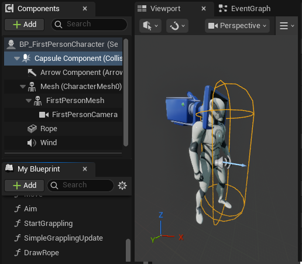
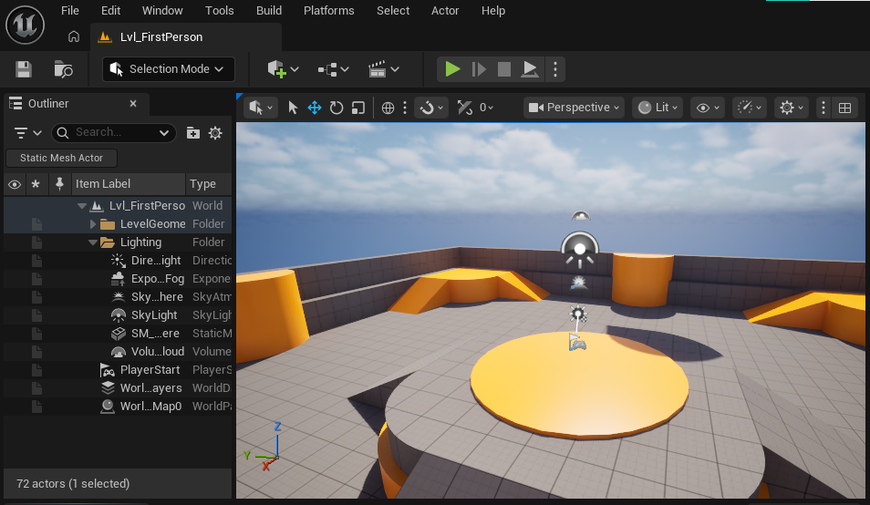
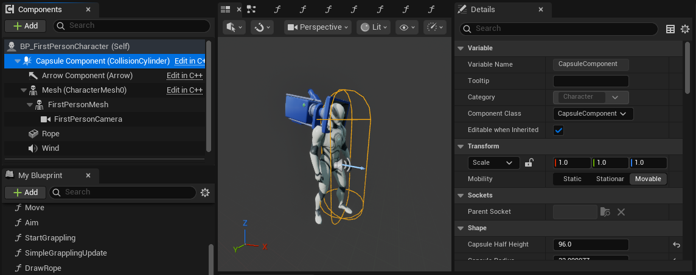
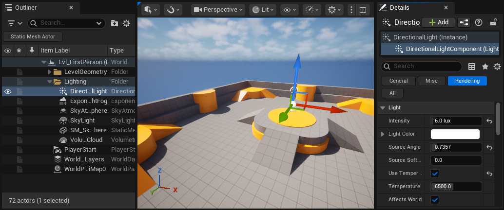
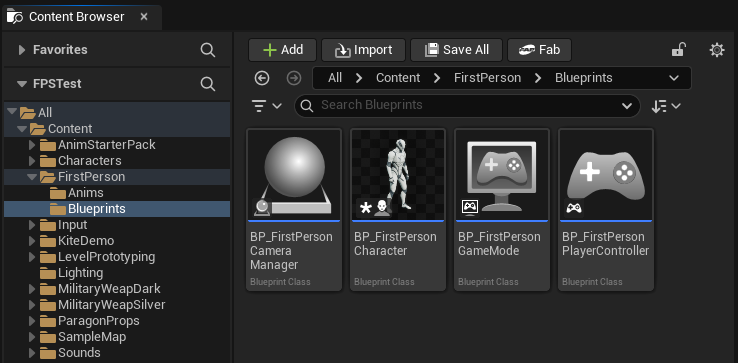
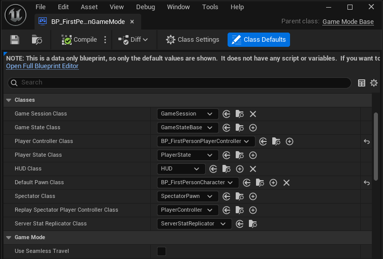

Starting out in Unreal Engine
Tips for beginners and Unity veterans
In order to make games in Unreal Engine the first thing you need to understand is how to navigate the different interfaces, menus and special assets. As a seasoned Unity developer this was almost harder than starting fresh - because everything is similar enough to feel like I should understand it, but just different and complicated enough that I couldn't figure it out without help.
This page has the information I wish I had when I was first trying out .
Levels and Actors and Assets
Most of the work developing a game is setting up and programming objects, designing the level, and creating assets. In a modern game engine these are all closely tied together, so figuring out how any one works requires learning about all of them.
Levels
Levels are Unreal Engines version of Scenes, and they function mostly the same as their Unity counterpart: Objects in the level are listed in the outliner, objects can be selected to see details, and there is a play button at the top to test the currently active level. One small but noticeable difference is that you cannot disable objects or components with the UI in Unreal Engine, which can make testing a little trickier. Another difference is that in Unity it would be common to make smaller sections of a scene into prefabs to be loaded in, but in UnrealEngine making another level and loading it into the main level is the more common approach (but both engines do support either option).
Another feature I love in Unity that Unreal Engine doesn't support is having a scene view and a game view at the same time. This makes debugging collisions, object generation and many other things much easier, as you can point the camera wherever it needs to be without changing the game at all. The closest I can find in UE is pressing F8 to enter free-camera mode, but unfortunately you can't control your character while doing this.
Actors
Objects or 'Actors' in Unreal Engine are much more different to Unity than the Levels are. Unity has a very simple system: Every single effect in the game - the mesh, renderer, collider, controller and more - is created by a component that is attached to a GameObject. GameObjects have names and positions, and can be children of other GameObjects, but are otherwise just foundations for the components to be built on.
Actors in Unreal Engine however are more cohesive - each actor is a self contained object that usually serves a single function on its own, and any additional functions are performed by 'components'. Components in Unreal Engine do the same job as components in Unity, but it's hard to notice this because on the surface they look a lot more like child objects: They have their own transform and name, can be nested children of other components in the main Actor, and at first glance the different sections of properties look like Unity components as well.
The main confusion comes from Actors and Components being so similar. You could add a 'Directional Light' component to an existing Actor, or you could add a 'Directional Light' Actor into your scene. These look like they're basically the same thing, but the Directional Light Actor is actually a special object that has a Directional Light component baked into it, but can also have other components added if needed.
Unity/Unreal Actor Comparison
At a fundamental level these two engines are actually organised in a very similar way, but the options you have to interact with the different pieces - as well as the way they are presented - makes them feel very different:
In Unity parts of your game are Scenes, which contain a list of GameObjects that can be ordered and parented to each other. GameObjects have a name and a position, and a list of Components with no positions or names that perform the functions of the object. GameObjects are all the same besides their components, and 'objects' like players or enemies are often made of multiple GameObjects which each hold components for different parts of their behavior. E.g. an enemy might have a 'head' child GameObject to handle critical hits.
In Unreal Engine parts of your game are Levels, which have a list of Actors that can be attached to each other. There are many types of Actors which have different built-in components or functionality, but can all have Components, which have their own position and perform additional functions for the Actor. Actors are often fundamentally different to each other, and each independent 'object' in a game should be a single Actor with components to handle the different parts of their behavior. E.g. an enemy could have a collision component called 'head' that handles critical hits.
Player Character
When loading either the First of Third Person Template to start a new project, you may find it difficult to figure out how your player character gets into the level - how does the Level know what object to spawn, and how do you change it or edit the character? The only clue is the 'Player Start' object that can be used to control where the player spawns - but it hasn't got a reference to a player. It doesn't get much clearer when we start the game either - nine different player-related actors appear with no clues about how they got there.
The way Unreal Engine handles players and controllers makes some games - like multiplayer shooters - much much easier to set up, and is in general very robust and flexible, but like many things in UE comes with a lot of complexity in order to support those goals.
To simplify, the controllers and characters that are spawned in the level are determined by a 'GameMode' asset that can be assigned in the project settings. The default GameMode asset and the character it references are stored under Content, FirstPerson (or ThirdPerson), then Blueprints. If you want to make changes to how your player works, just edit the BP_FirstPersonCharacter or BP_ThirdPersonCharacter found in the same folder.
Conclusion
The way Unreal Engine handles Levels and Actors is a little more complicated than Unity, but not really worse or better - just different.